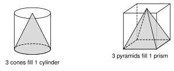
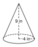
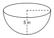
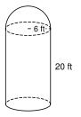
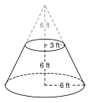

8.5 Volume of Pyramids, Cones, and Spheres
- Find the volume of a pyramid and a cone
- Use the Pythagorean theorem to find the height first
- Find the volume of a sphere and a hemisphere
- Find the volume of a composite solid and use volume in real problems
Warm-Up
1.
2.
3.
8.5.1Pyramids and Cones
- Pour a pyramid into a prism with the same base and height. It takes pours to fill the prism.
- Pyramid: V =
- Cone: V =
- h is the height, not the height.


B = 6 · 6 =
V = 13(36)(8) =

V = 13π(4)2(9) =
≈
8.5.2Finding the Height First

Half the base =
h2 = , so h =
V = 13(100)(12) =

h2 = 102 − 62 = , so h =
V = 13π(36)(8) =
≈
8.5.3Spheres and Hemispheres
- Sphere: V =
- Hemisphere: V =
- The radius is , not squared.

V = 23π(5)3
= ≈
8.5.4Composite Solids

Cylinder: π(6)2(20) =
Hemisphere: 23π(6)3 =
V =

Cone: 13π(9)(10) =
Hemisphere: 23π(27) =
V =

Whole cone: 13π(36)(12) =
Tip: 13π(9)(6) =
V =
8.5.5Real Problems
r = V = 13π(36)(5) = ≈
188.5 ÷ 27 ≈
1. A pyramid or cone holds of the prism or cylinder with the same base and height.
2. For a sphere, the radius is : V = 43πr3.
3. Find the height from the slant height with the .
4. For composite solids, pieces or a removed piece.
Practice
Pyramids and Cones
1. A square pyramid has base side 9 in and height 10 in.
2. A pyramid has a rectangular base 7 m by 6 m and a height of 9 m.
3. The base of a pyramid is a right triangle with legs 6 ft and 8 ft. The height is 10 ft.
4. A cone has radius 5 cm and height 9 cm. Give the exact answer and a decimal rounded to the nearest tenth.
5. A cone has diameter 14 in and height 15 in. Give the exact answer and a decimal rounded to the nearest tenth.
6. Find the mistake. Kofi says a pyramid with a 6 by 6 base and height 5 has volume 36 · 5 = 180. What is the correct volume?
7. A cone has volume 96 π cubic feet and radius 6 ft. Find its height.
8. A square pyramid has base side 6 cm and volume 84 cubic centimeters. Find its height.
Find the Height First
9. A square pyramid has base side 24 ft and slant height 13 ft. Find the volume.
10. A square pyramid has base side 14 cm and slant height 25 cm. Find the volume.
11. A cone has radius 8 in and slant height 17 in. Give the exact answer and a decimal rounded to the nearest tenth.
12. The triangle with vertices (0, 0), (5, 0), (0, 12) spins around the y-axis. Find the volume of the cone. Give the exact answer and a decimal rounded to the nearest tenth.
Spheres and Hemispheres
13. A sphere has radius 3 ft.
14. A sphere has diameter 20 cm.
15. A hemisphere has radius 6 in.
16. A sphere has volume 323π cubic meters. Find its radius.
17. A basketball has radius 12 cm. Find the volume of air inside, ignoring the thickness of the ball.
Composite Solids
18. A silo is a cylinder with radius 5 ft and height 12 ft, with a hemisphere on top.
19. An ice cream cone has radius 4 cm and height 6 cm. A scoop shaped like a hemisphere with radius 4 cm sits on top. Find the total volume.
20. A cone with radius 10 cm and height 15 cm has its top cut off. The tip that was removed has radius 4 cm and height 6 cm. Find the volume that is left.
21. A cube has edge 6 in. A square pyramid with height 4 in sits on top with the same base. Find the total volume.
22. A cylinder has radius 4 m and height 9 m. A cone with the same radius and height is cut out of it. Find the volume that is left.
Real Problems
23. A pile of sand is a cone with diameter 10 ft and height 4 ft. How many cubic yards is it? Round to the nearest tenth.
24. A pile of road salt is a cone with radius 7 ft and height 5 ft. A truck carries 4 cubic yards. How many truck loads are needed to move the pile?
25. A coffee filter is a cone with radius 5 cm and height 12 cm. How many milliliters of water does it hold when full? (1 cm3 = 1 mL.) Round to the nearest milliliter.
26. A beach ball has radius 30 cm. How many liters of air does it hold? (1000 cm3 = 1 liter.) Round to the nearest tenth.
Test Practice
A. 754.0 cubic inches
B. 1,960.4 cubic inches
C. 2,261.9 cubic inches
D. 5,880.0 cubic inches
A. 30 cubic feet
B. 45 cubic feet
C. 60 cubic feet
D. 270 cubic feet